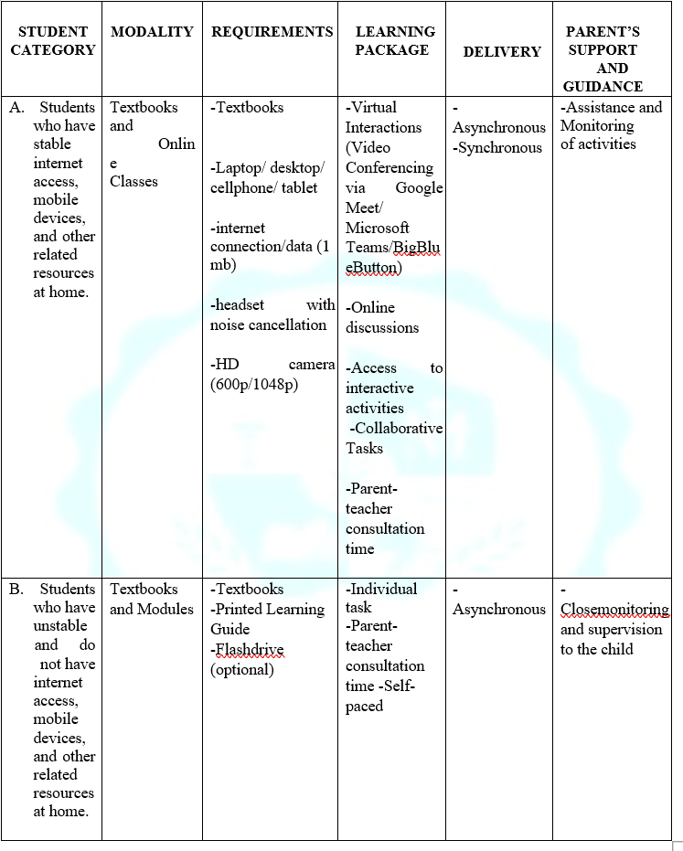
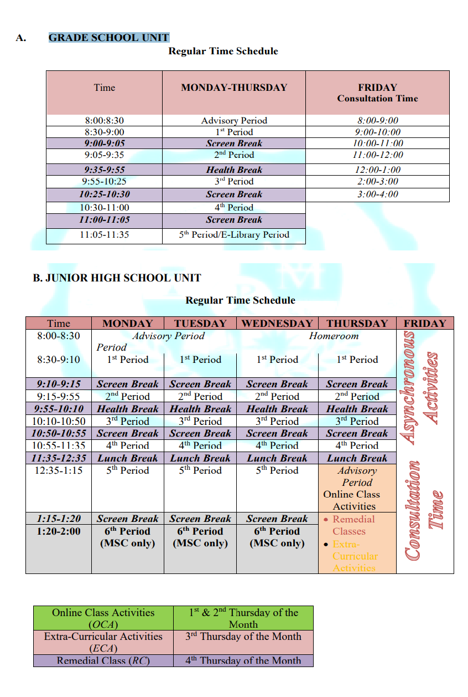

The institution believes that education is a non-stop process. Despite the sudden change of our system due to the pandemic, the Maryknoll College of Panabo, Inc. continues to support students learning guided by the school’s philosophy, vision, mission and objectives.
In response to the country's situation amidst the COVID-19 pandemic, the MCPI has considered two modes of instruction delivery, the Online Distance Learning and Modular Distance Learning. Each modality has its own strength in catering the diverse needs of the students. With this, students will be able to keep abreast with the frenetic changes in the educational landscape
In addition, MCPI strongly encourages the parents and guardians to take a part as full partners in constituting a wholesome learning experience in the safety and comfort of their homes.
Kindly take a look at the table to fully understand the distinction of each modality.
SPECIFIC GUIDELINES
As per DepEd and approved by the IATF, adoption of various learning delivery options such as but not limited to face-to-face, blended learnings, distance learnings, and homeschooling and other modes of delivery shall be implemented depending on the local COVID Risk Severity Classification and compliance with minimum health standards.
I ONLINE DISTANCE LEARNING
Online class offers good features for virtual discussions and interactive activities. It caters both synchronous and asynchronous mode of delivery. Also, it provides immediate feedback and direct follow-up activities for the students. The school has an educational platform or Learning Management System, grade school learners will use the Schoology and junior and senior high school learners will use the MCPI’s LMS.
Textbooks are required for online learning which serve as supplementary materials for the learning process. In addition, one of the guiding principles of the online class is the focus on the health, wellness and safety of the students. This is why in online class we set the screen time to at least two hours of online contact for lower grade school and at least four hours for high school.
Students in online class must prepare the following: preferably laptop/desktop, tablet or smart phone, headset with noise cancellation, HD camera and an internet connection/data of at least 15mbps. Also, students during classes are required to be in a well-ventilated or in a conducive place. Moreover, virtual rules/netiquettes will be given to students and parents during orientation.
Parents play vital role in monitoring and guiding their child as they start their class. Before the official start of this school year class, students as well as their parents will undergo orientation as to how online class works and they will be oriented on their consultation time.
II. MODULAR DISTANCE LEARNING
Modular class offers self-paced and asynchronous mode of delivery. It requires both textbooks and module. Students need to rent/purchase textbooks which serve as their learning materials. Modules on the other hand, contains instructions, activities and follow-up discussions.
The students under modular class will be given on scheduled dates per unit. Grade School modules will be first distributed on August 17, 2021 (Tuesday) and Junior High School will be on August 16, 2021 (Monday).
A. GRADE SCHOOL UNIT
Parents/Guardians are expected to receive and drop modules on the scheduled date of distribution and submission. Below are the specific guidelines for the distribution and dropping of modules:
- Schedule of releasing is twice a month. The first two weeks is intended for SET A subjects (CLVEd, English, Filipino, Araling Panlipunan and Science) and the next two weeks is for SET B subjects (Math, MAPEH, TLE/Mother Tongue and ICT);
- Textbooks shall be submitted (if required by the subject teacher) together with the modules;
- Modules shall be placed in a transparent long envelop
- Boxes are prepared in the designated area per grade level; Name of the grade level section is posted on the box where the parent/guardian shall drop the module; and
- Conferences might happen if need arise.
B. JUNIOR HIGH SCHOOL UNIT
Parents/Guardians are expected to receive and submit modules on the scheduled monthly distribution and submission: Below are the specific guidelines for the distribution and dropping of modules:
- Modules shall be placed in a transparent long envelop;
- Boxes are prepared in the designated area per grade level; Name of the grade level section is posted on the box where the parent/guardian shall drop the module; and
- Conferences might happen if need arise.
One crucial reminder about this type of modality is it needs regular supervision of the teacher to students. Thus, consultation time per subject is given to address difficulties and concerns of regarding instructions.
Parents in modular class need close monitoring and guidance to their child. Their role plays crucial in the learning process. They will be the ones to submit the output at school. They will also be the one to receive first-hand the information and instruction of the teachers about the subject.
III. ASSESSMENT
Formative, summative and other forms of assessment will be utilized to monitor the progress and development of the students. Other activities such as performance tasks shall be done collaboratively or individually in online and self-paced task for the modular users. The teachers, students and parents will have an access and data on the progress of their performance.
Examinations for both online and modular distance learners are in a form of ONLINE. This promotes paperless assessment to avoid contacts from person-to-person. Specific guidelines shall be imposed for the online examination. Quizzes, assignments and other activities shall be limited in accordance with the time schedule given per subject.
Despite the changes in the modalities, the school still follows its well-planned curriculum to academically equip students with the required competencies, skills and attitude for higher forms of learning.
- The grading is averaging.
- There are four grading periods in a year
- The final mark in each subject at the end of the year is the average of the four grading periods
- The general average is the waited mean of the final marks in all subjects.
- The school has adopted the DepEd grading system (DepEd Order No. 8, series of 2015)